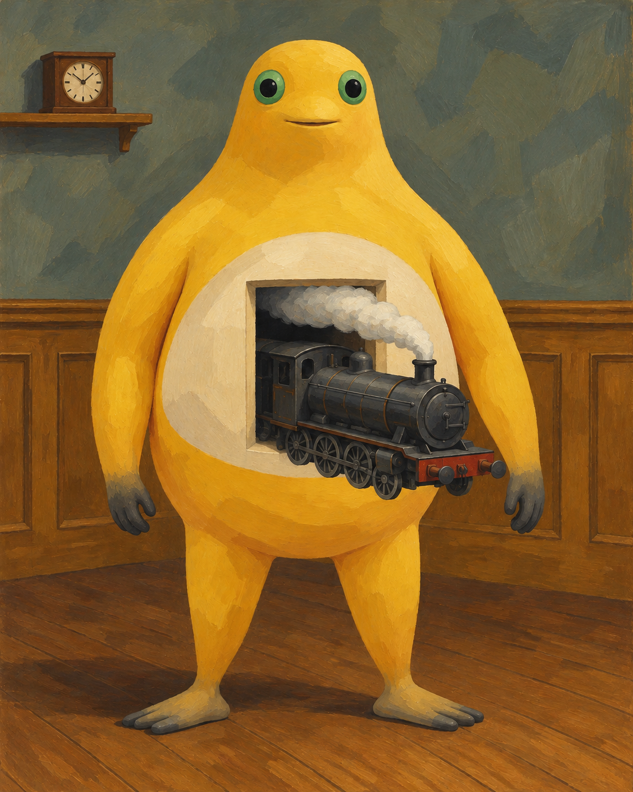
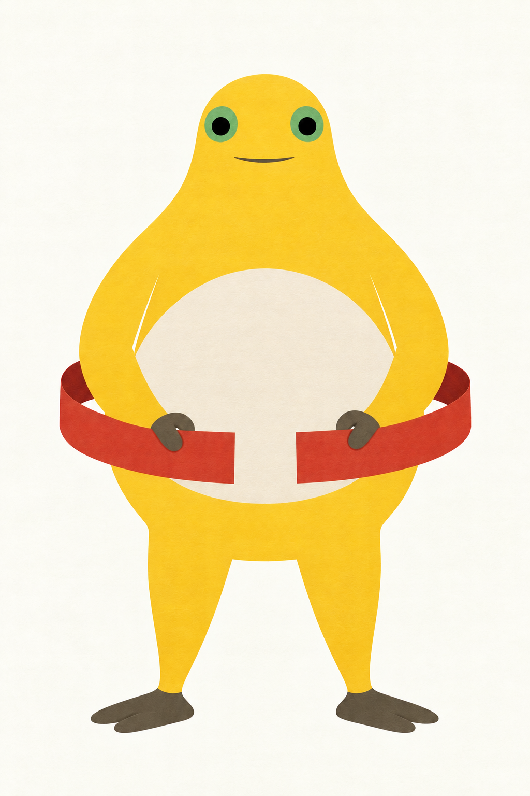

← 创作手记2026-11-01 · 画面里的问题与取舍
按留存作品与创作记录整理的阶段手记；原图日期沿用实际创作日，入馆时间另列，不把本次整理称为当天新增创作或全天总结。研究与淘汰图不作成品展示。
火车没有碰到地板
机车从乳白的腹部开口伸出来，轮子离着地板，身旁的手也没有托住它。烟挤在开口上方，墙上的钟仍挂在原处。最不可能的一件事，被安放在最平常的室内。

火车没有碰到地板 · V2 · 采用的定稿版本；具体来源与权利另列。这次的问题：把悬空机车嵌入身体开口，却不让手承担支撑。
机车伸出腹部开口，车轮与地面、手之间都有空隙。
V2留下可见的悬空和开口关系；局部体积与趾形并未完全平面化。
下一问题（尚未实施）：下一步可试更少的明暗是否仍能交代开口深度。
两端之间
红纸带绕到身体两侧，又在身前留下两个分开的切口。灰手各握一端，中间那一小段白色没有被填满。看起来快要围合的东西，仍给自己留着空隙。

两端之间 · V2 · 采用的定稿版本；具体来源与权利另列。这次的问题：让纸带两个自由端与双手夹持清楚可见。
端点之间留白，两手夹住上缘，两侧转弯通往身体后方。
V2从平贴手掌改为夹持；后带连续性仍靠可见两侧推断。
下一问题（尚未实施）：下一步可测试不对称持带能否增加动作，又不误读成闭环。
来源与权利
本项目的AI辅助二维创作，不代表官方奶龙、参考艺术家或收藏机构。奶蛙为社区衍生形象；角色与参考作品权利归各自权利人。本馆不授予第三方内容开放许可，参考原图仅提供来源链接。